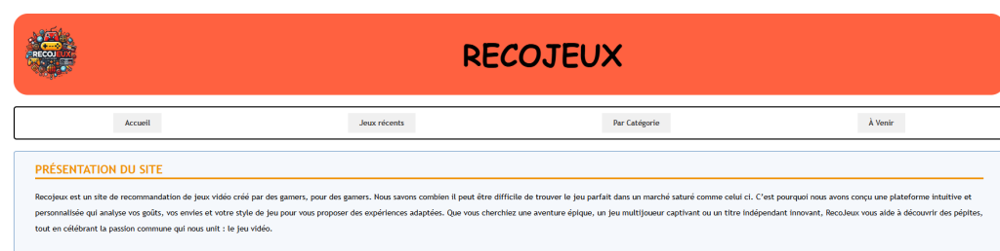
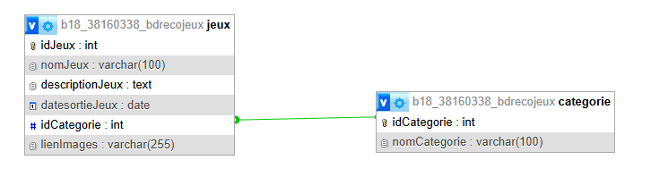

Projet
Cybernews.
Description du Projet
Réalisation, en groupe de 3, d’un site web statique puis dynamique sur le thème : les jeux vidéos.
HTML
CSS
PHP
MySQL
Travail réalisé
Page d'accueil du site :
Base de Données :
Trello :

Compétences Validées
-
B1.1 Gérer le patrimoine informatique
Recenser et identifier les ressources numériques -
B1.3 Développer la présence en ligne
Participer à l’évolution d’un site Web exploitant les données de l’organisation. -
B1.4 Travailler en mode projet
Planifier les activités -
B1.5 Mettre à disposition des utilisateurs un service informatique
Déployer un service